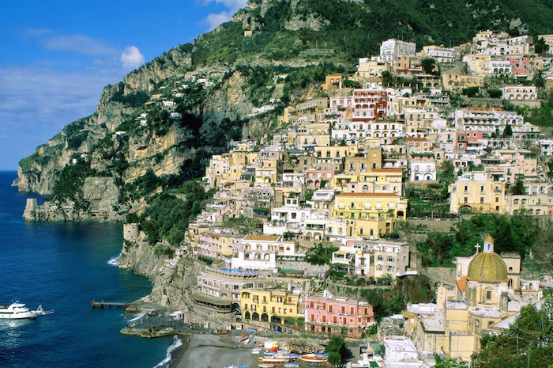
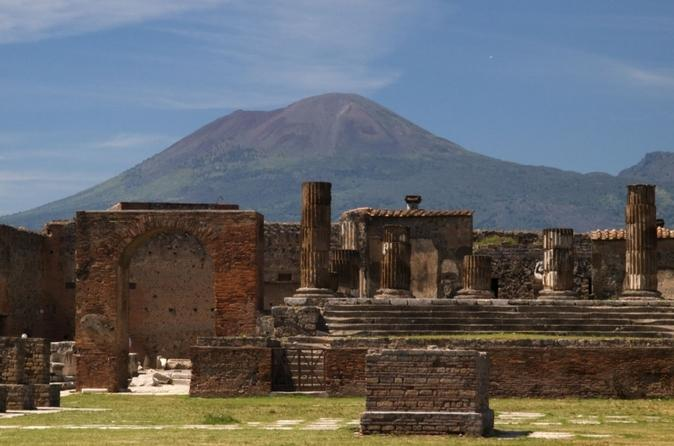
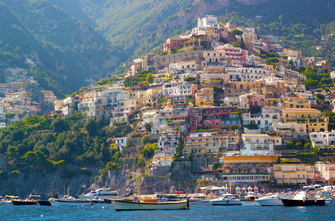
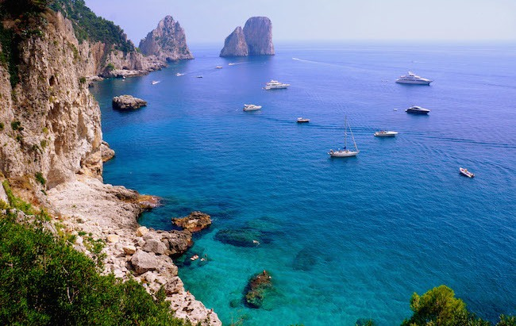
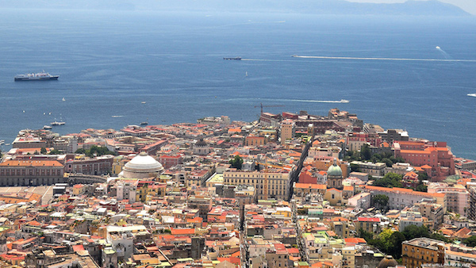
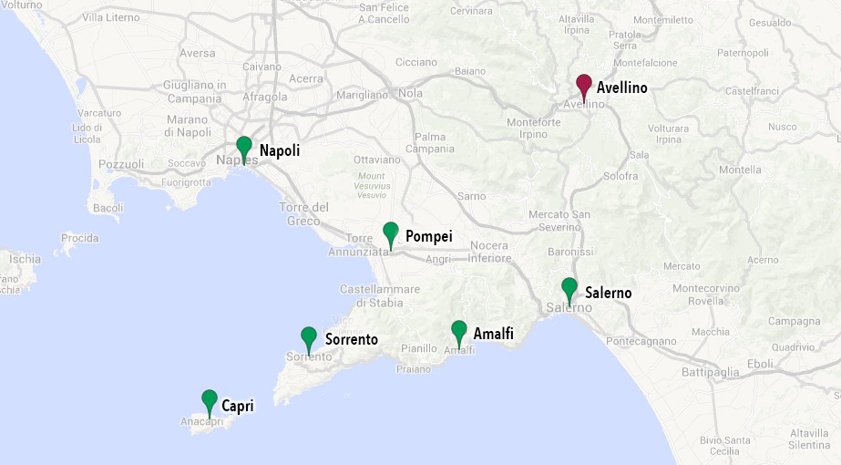

Travel Information
Villa Assunta is located in Mirabella Eclano, 40km (45min drive) northeast of Emiliano's hometown, Avellino.
Mirabella Eclano has only a couple of (small) hotels, and English is not commonly spoken, so we suggest that guests stay in Avellino.
Avellino is the capital of the province (also called Irpinia, from the Latin word for wolf, hirpus), in the southern Italian region of Campania. Although it's relatively small (60,000 people), it's lively in the summer and has a few nice restaurants and cafes. The province of Avellino is known for hazelnuts, tartufi (truffles), torrone (hard candy with hazelnuts and almonds) and a few wines such as Fiano di Avellino, Taurasi, and Greco di Tufo.
Campania is the most populated region in the south of Italy. Its capital and best known city is Napoli and it is home to several popular tourist destinations, such as Pompei, Amalfi, Sorrento, Positano, Capri, Ischia, and Caserta. (Scroll down for more information on sightseeing in Campania).
Getting around: If you are driving to Villa Assunta, please follow the directions on the reception page.
Guest Bus Transportation: We will have a private bus service, on the day of the reception, between Avellino and Villa Assunta. The bus will pick up guests from Viva Hotel at 11.15am and will return at night, at the end of the reception.
Airports
Napoli Capodichino (NAP) is the closest airport, with flights to most Italian and European cities. It's 50km west of Avellino (approximately 45min drive). You can get to Avellino either by renting a car or taking a bus – please click here for more information on the public transport bus.
Roma Fiumicino (FCO) is Italy's largest airport, so you many find it easier to fly here. It's 265km north of Avellino (approximately 2h45min drive). The best way to get to Avellino is to rent a car, but you can also take a train to Napoli and, from Napoli, a bus to Avellino.
Roma Ciampino (CIA) is smaller than Fiumicino and operates low-cost (Ryanair/Easyjet) flights from several European cities. It's 240km north of Avellino (approximately 2h20min drive). Getting to Avellino with public transportation is quite cumbersome so we recommend renting a car if you fly here.
Trains
There is no rail service to Avellino, but all major cities, including Napoli, are well connected to each other with high-speed trains. The main railway company in Italy is Trenitalia. There is also another smaller company called Italo. It is best, but not mandatory, to book trains in advance if traveling on Friday afternoon or Monday morning. You can usually change your reservation at no charge before the departure time.
Roma Fiumicino Airport has a train station with direct trains to Roma Termini (main station). Journeys take about 30-35 minutes. From the airport, trains run every half an hour: at 08 and 38 after the hour, from 6.38am to 11.08pm. You can look at timetables from Trenitalia. Tickets can be bought at any railway station and/or at the airport.
Roma Termini (Main Station) has frequent high-speed trains to Napoli, Salerno, Firenze, Milano, Venezia, etc. If you are planning to take a train from Roma Fiumicino airport, this is where you connect to other destinations.
Napoli Centrale is Napoli's main station, connected to Roma and any other major city. From here, you can rent a car or take a direct bus to Avellino. Napoli Centrale is also known as Piazza Garibaldi (from the name of the square where it is located), or Napoli FF.SS.
Buses
Napoli-Avellino: There is a convenient bus service between Napoli's main station and Avellino, approximately every 20-30 mins or every hour during the weekend/at night. Buses for Avellino depart from the "Terminal Bus Metropark", just a couple of minutes walk from the train station. Journeys take about 1 hour. Most buses stop at Napoli Capodichino airport. You don't need a reservation but you can't buy tickets onboard – you will need to buy them at the bus stations in Napoli or Avellino, or at the airport. The bus company is called Air Autoservizi Irpini. Timetables are available in Italian and English. If you are planning to take the bus from Napoli Airport to Avellino, please see here for more information.
Roma Tiburtina-Avellino: There is also a bus connecting Roma "Tiburtina" (Roma's long-distance bus terminal) and Avellino. Journeys take approximately 3 to 3.5 hours, depending on traffic. Tiburtina is in downtown Roma, on the Metro B line. Bus tickets need to be reserved ahead of time at Tiburtina or Avellino bus stations. Timetables are available in Italian and English.
Car Rental
The best way to get around Campania is to rent a car. European and US driving licenses are accepted and insurance is usually covered in the car rental agreement. It is recommended to reserve in advance, since there are many tourists during the summer. We also suggest renting (or bringing) a GPS navigator.
Airports: You can rent a car from any airport, including Roma Fiumicino, Roma Ciampino, and Napoli Capodichino.
Train Stations: There are a few car rental agencies at Roma Termini, one in Napoli Centrale, and two in Salerno (1, 2).
Avellino: There are some car rental agencies in Avellino, but they are either not reachable via public transportation or you cannot book them online. However, if you would like to rent car from Avellino, please let us know and we can make a reservation for you at a downtown agency.
Sightseeing
There are several places in Campania that are definitely worth visiting — here are some suggestions:
Amalfi
This beautiful little town gives the name to the Amalfi Coast, a breathtaking 50km stretch between Sorrento and Salerno. Lonely Planet writes: "Cliffs terraced with scented lemon groves sheer down into sparkling seas; whitewashed villas cling precariously to unforgiving slopes while sea and sky merge in one vast blue horizon." Besides Amalfi, other towns to visit along the coast include Positano and Ravello. You can drive the windy road and stop at the lookouts for an unforgettable selfie :-), or take a ferry from Salerno (the biggest town close to Amalfi) and enjoy the view from the boat. Let us know if you're planning to stay overnight – we have some hotel and restaurant recommendations.
Pompei
Pompei was a flourishing ancient Roman city, which, along with Herculaneum and many villas in the surrounding area, was destroyed and buried under more than 5 meters of ash and pumice in the eruption of Mount Vesuvius in 79 AD. After thick layers of ash covered it, Pompei was abandoned and forgotten and rediscovered only in the 16th century, and the first excavations started in 1748. Pompei is now a UNESCO World Heritage site. We also recommend visiting the ruins of Hercolanaeum (Ercolano): while smaller in size, it is usually less crowded and better preserved.
Sorrento
Sorrento is at the northernmost tip of the Amalfi coast and is not too far from Pompei. Aside from the beautiful views of the coast, Mount Vesuvio, and Capri island, Sorrento is very picturesque, with a lot of nice cafes, restaurants, and artisan shops. It is also famous for its ceramics as well as the "giant" lemons used to make Limoncello (a famous lemon-based liquor served chilled after lunch or dinner).
Capri
The island of Capri is one of the most popular destinations in the south of Italy, a 40-minute ferry ride from Napoli. It is famous for its fancy cafes and restaurants, nice promenades, and breathtaking cliffs. Don't miss the Grotta Azzurra (Blue Grotto), a sea cave where the sunlight, passing through an underwater cavity, creates an amazing blue reflection.
Napoli
Napoli has a lot of history, beautiful architecture, and a unique character. During the 18th and 19th centuries, Napoli was the capital of one of the richest and most advanced kingdoms in Europe, and this is reflected in its architecture. We recommend visiting the castles (Maschio Angioino and Castel Dell'Ovo), Piazza Plebiscito, the "underground" city (Napoli Sotterranea) with chambers and passageways built during Greek times, and the picturesque narrow alleys of the old town buzzing with artisan shops. Undisputedly, Napoli has the greatest pizza in the world :-). Suggested pizzerias include Pizzeria Trianon da Ciro, L'Antica Pizzeria da Michele, and Pizzeria Di Matteo. You may also want to try the "fritti" (literally, fried stuff) and the pastries (e.g., sfogliatelle, baba, zeppole).
Shopping
A few guests have asked us about shopping :-) City centers have a lot of good shops, e.g., Via Roma and Via Toledo in Napoli or Corso Vittorio Emanuele and Corso Europa in Avellino (keep in mind that most of them are closed on Sundays). There is also a good outlet mall, La Reggia Outlet, open 7 days a week, in Marcianise: it's a 20min drive north of Napoli or 45min north west of Avellino (see map) and you would need a car to get there (if you are driving between Roma and Napoli or Avellino, the outlet is going to be on your way).
